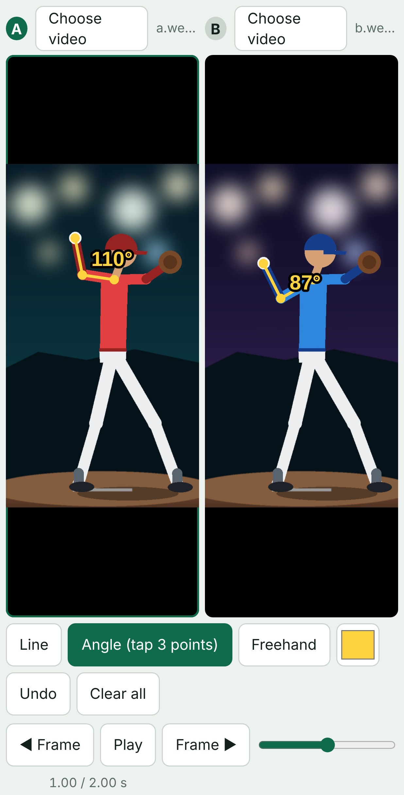
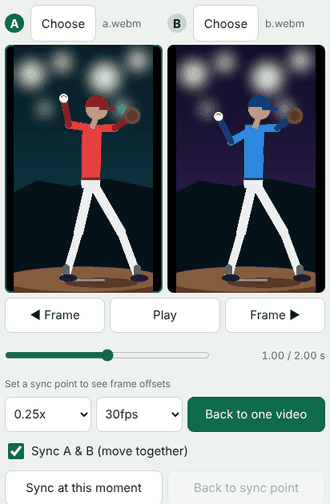

Compare two videos at the moment of contact
Form Note is a free tool for reviewing baseball mechanics on video. Line up two clips on the same moment, such as yourself and a model, or last week and this week, and step through them frame by frame. Videos are processed only on your device.
Open the app
Two clips lined up on the same sync point and stepped forward 3 frames. Sample clips are illustrations, not real players.
What Form Note is good at
Line up both clips at the key moment
Pause A and B on the moment of contact or release and tap “Sync at this moment”. That moment becomes zero, and you can step before and after it in both clips together. Even if the clips start at different times, you compare the same moment.
One tap, exactly one frame
Built so that one tap moves exactly one frame in 30, 120 or 240 fps clips. Fast swings and pitches can be followed without skipping. Drawings are fixed to the screen, so you can check body movement against a reference line.
Share or ask AI about the result
Tap “Ask AI” to get 4 images around the moment and a ready-made question (good points, concerns, drills) to send to the AI app you prefer. “Save / Share” sends images to chat apps.
- Videos never leave your device
- No sign-up, no fees
- Just open it in a browser
Compare two videos (the best way to use it)
If this is your first time, these 4 steps are all you need.
Choose two videos
Tap Compare, then use Choose video for A and for B. If you pick several videos at once, you can swap them quickly with ◀ ▶.
Stop each one at the moment to compare
Use Frame ▶, ◀ Frame or the slider to set A on the moment of contact or release. Then tap the B screen to select it and set B on the same moment.
Tap “Sync at this moment”
With both on their moments, tap Sync at this moment. That moment becomes zero. From now on, Frame ▶ and Play move both videos together. The screen shows the frames from the sync point.
Save, share or ask AI
Tap Ask AI to get one image of the moments around the sync point, ready to send to an AI app with a question. To show someone, use Save / Share, which includes your drawings.
Basic use (one video)
Choose a video
Tap Choose video and pick a clip from your phone. To compare two clips, tap Compare first, then choose a second video for B. Both landscape and portrait videos are shown automatically. You can pick several videos at once; with two or more, use ◀ ▶ next to the name to switch between them quickly (drawings are cleared when you switch).
Find the moment
Tap Frame ▶ or ◀ Frame to move one frame at a time. Drag the slider to jump around, or tap Play and set the speed from 0.1x to 1x. With Sync A & B on, both videos move together.

Each tap on Frame ▶ moves one frame. The players are illustrations.
Draw and measure
Open Drawing tools at the bottom of the screen, pick a tool, then draw on the video. Your drawings stay on screen as you move through frames, so you can check whether a position changes.
Save and share
Tap Save / Share to get an image with your drawings. Use This moment and 4 frames at the top to switch between one image and a set of four. The app’s name, link and a QR code are added at the bottom, so anyone you share it with can open the app. On phones that support it, tap Share to send the image straight to a chat app; the link is sent as text too, though whether it appears depends on the chat app. You can also press and hold the image to save it, or take a screenshot.
Ask AI about 4 key moments
Tap Ask AI on the main screen. The app collects 4 images around the moment you are viewing, at the interval (in frames) you choose, and puts them in one image (for example, with an interval of 5 frames: −10, −5, 0 and +5; 0 is the moment you are viewing, marked with ●; near the end of a video, the missing ones are taken from the other side). With two videos, the 4 images have A and B lined up on the same moments. A question for the AI (good points, concerns, drills) is prepared on the same screen. Enter your age and concern, choose the relationship between A and B if you have two videos (both me / A is me and B is the model, etc.), then tap “Copy the question and send to an AI app” and send the image and question in an app such as Claude or ChatGPT. You can edit the question freely. It asks the AI to compare A and B number by number, lists points to look at, and tells it to write “cannot tell” for what it cannot see. The image is sent only to the app you choose. The AI’s comments are a guide; if you have pain, see a doctor or coach.
Drawing tools
| Line | Drag from one point to another. Good for checking a straight edge, such as a vertical line through the head. |
|---|---|
| Angle | Tap three points in order (the screen says “Tap 3 points: end, vertex, end”). The angle is measured at the middle point and shown on the video. For an elbow, tap shoulder, elbow, then wrist. |
| Freehand | Drag to draw any shape. |
| Color (yellow square) | Change the color of the next line you draw. |
| Undo | Removes the last point or drawing on the selected video. |
| Clear all | Removes all drawings on the selected video. |
Playback settings
| Speed | 0.1x, 0.25x, 0.5x or 1x. Slower speeds make fast motion easier to see. |
|---|---|
| fps | Set this to the frame rate you filmed at (for example 30, 60 or 240). It decides how far Frame moves, so one tap should equal one frame of your video. The app cannot read the real frame rate of a video by itself: if you filmed at 240 fps but leave it at 30, “one frame” will not match your video. For clips whose frame rate varies while filming (variable frame rate), exact frame stepping cannot be guaranteed. |
| Compare | Shows videos A and B together. Tap Back to one video to return to one video. |
| Sync at this moment | Pause video A and video B on the moment you most want to compare (impact, release…), then tap Sync at this moment. That moment becomes zero, and both videos step together, frame by frame, before and after it. The screen shows how many frames and seconds you are from the sync point. Back to sync point returns both videos to it. If either video reaches its first or last frame, both stop so the gap never changes. Choosing another video clears the sync point. |
| Sync A & B | When on, Play, Frame and the slider control both videos. Turn it off to move one video on its own. If the videos start at different moments, turn it off, set each video to the scene you want to compare, then turn it back on: they will keep moving with the same gap between them. |
Filming tips
- Put the phone on a tripod or a stable surface so the picture doesn’t shake.
- Film from the same spot and angle each time, so clips are easy to compare.
- Film side-on for pitching and hitting mechanics, and keep the whole body in the frame.
- Use 60 fps or higher if your phone allows it. Slow-motion modes are even better for fast swings and throws.
- Good light and a plain background make the body easier to see.
Questions
I’m new. How do I use it?
Under “First time?” at the bottom of the app there are two guides. “Ask AI: 1 video” goes from choosing a video to sending it to an AI app. “Ask AI: compare 2” puts two videos side by side, lines up the sync point, and then goes on to sending it to an AI app. Both point at the screen as they go. A notice about the guide also appears the first time you open the app.
Are my videos uploaded anywhere?
No. Videos are opened and processed on your device in the browser. Form Note doesn’t send them to a server.
Can someone open the app from the saved image?
Yes. Open the saved image on the same phone and long-press the QR code (in Google Photos or Google Lens, tap the link it detects), or scan it from another phone’s camera. The link written next to the QR code is part of the picture, so it can’t be tapped. The QR code works in a saved image or a screenshot, as long as the image is still large enough to read. If you use Share, the link is also sent as text, and many chat apps make it tappable.
I don’t see the Share button.
The Share button appears only in browsers that can share images. If you don’t see it, press and hold the image to save it, or take a screenshot, and send that.
What does the saved image include?
The image from Save / Share is the frame you were viewing, with your drawings and angles on top. The image from Ask AI has no drawings. A bar at the bottom shows the app’s name, its link and a QR code.
The video takes a long time to load.
Large files, such as long 4K clips, can take a while to open. Try filming at 1080p, or trim the clip to the part you need.
The video won’t play.
Some phone videos use a format that not every device can play, especially HEVC (H.265) clips from iPhones. On iPhone, set Settings → Camera → Formats → Most Compatible and film again, or convert the clip to H.264 MP4. Then choose it again.
Do my drawings follow the video?
No. Drawings are fixed to the picture area, not to each frame. They stay in the same place as you step through the video, so you can compare how the body moves against a fixed line. Each pane keeps its own drawings, and choosing another video clears them.
Frame doesn’t move one frame at a time.
Check the fps setting. It should match the frame rate you filmed at. If it’s set higher than the video’s real rate, each tap moves less than one frame.
My phone always opens the same folder when I choose a video.
The file picker is controlled by your phone, not by the app. Try the Recent or Videos view in the picker to find your clips without browsing folders.
Do the drawings stay on the video?
They stay while the page is open. If you reload the page or choose a new video, they’re cleared. Use Save / Share to keep a copy.